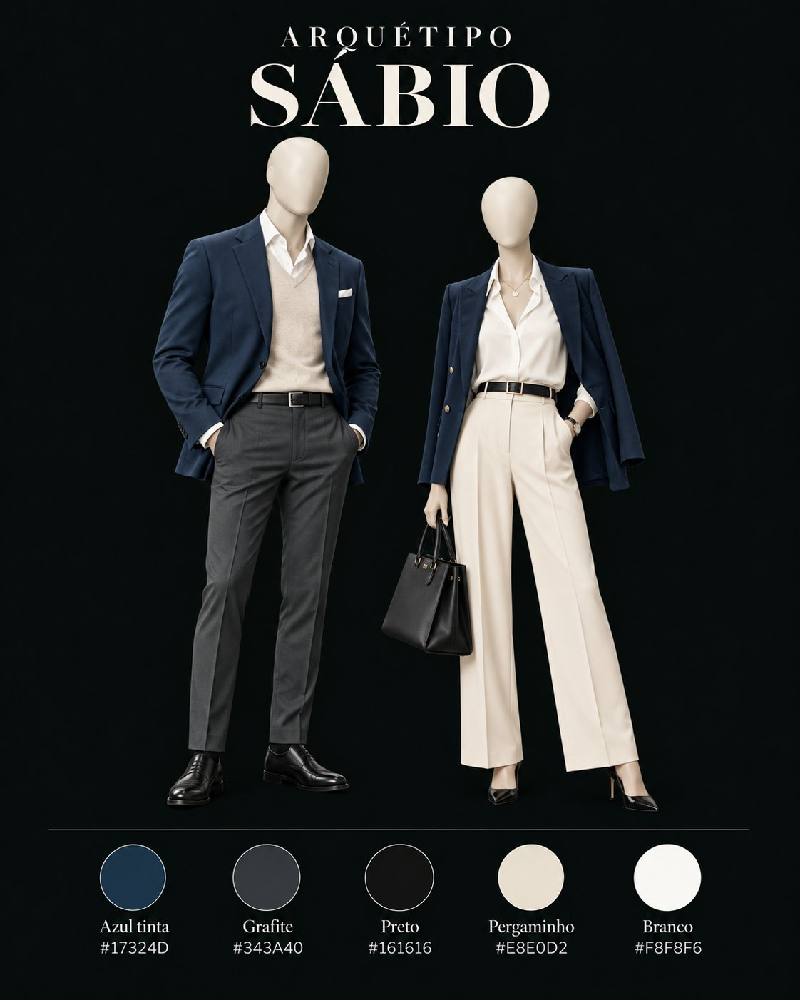

Teste de arquétipos
Descubra o seu arquétipo e como se posicionar
São 12 fatos para marcar, 36 afirmações de 1 a 5 e 5 situações para escolher, uns doze minutos. No fim, você recebe o seu arquétipo, os seus pontos fortes e um plano para se posicionar no digital, nas redes, no presencial e no jeito de se vestir, de se portar e de se comunicar.
A devolutiva sai em PDF, para você baixar e guardar.

Parte 1 de 3
Marque o que já é verdade para você
Marque quantos quiser, ou nenhum.
Parte 2 de 31 de 36
1 = Discordo totalmente · 5 = Concordo totalmente
Atalho: teclas 1 a 5
Parte 3 de 3 · Para fechar1 de 5
Qual destas é mais você?
Visão do time
Digite o PIN de operação para ver a devolutiva deste aluno.